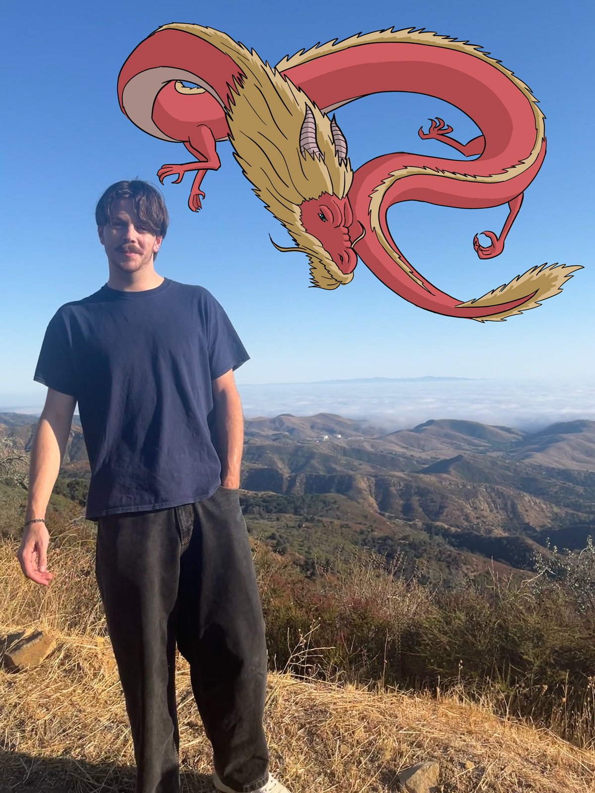

About

Artist Statement
I'm Phillip Jones, though most people call me Gavin. I make traditional and digital drawings and paintings, and short digital animations. I work with pencil, marker, and paint, and digitally in Procreate and Photoshop. I'm interested in concept art, character design, background painting, prop design, storyboarding, and the rest of animation pre-production and visual development.
I'm driven by telling stories and making images that pull people in. I'm drawn to real stories from history and to historical fiction, especially European and American history, Indigenous stories, and science and natural history. I care most about the stories that are lesser known. I'm also influenced by art history, the animation I grew up with, and current events. I want to tell historical stories that mirror the problems of today, including the role capitalism and U.S. imperialism have played in shaping the modern world.
I want people to notice the attention to detail in my work, the accuracy to historical reference, and designs that feel believable. My style sits between realism and 2D hand-drawn animation. I'm still growing as an artist, and I'm working toward these goals one piece at a time.
Education
- San José State University, BA in Studio Art, expected 2027
- Santa Barbara City College, coursework in animation, interactive technology, and video graphics and special effects, 2022 to 2024. One work shown in the SBCC Student Exhibition, 2024.
- Diablo Valley College, coursework in web, digital, and multimedia design, 2020 to 2021